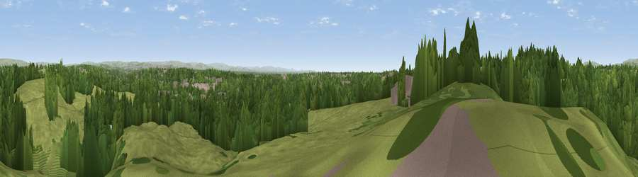

Viewpoint near Simister
#23861 in England · top 52% of its area beats it · near SimisterThe view, rendered

A 360° render of this exact spot computed from the terrain model, tree cover and land cover — summer colours, afternoon light, calibrated against photographs of famous viewpoints. Real trees, hedges and buildings will differ in detail.
The panorama
Grey silhouette: terrain skyline in each direction (720 bearings, Earth curvature and refraction included). Dashed green: skyline with trees (+15 m) and buildings (+8 m) as obstacles. Blue strip: how far the ground is visible on each bearing.
Where the view opens
Wedge length = distance to the farthest visible ground on that bearing (vegetation-aware). Rings at 10, 25 and 50 km.
What fills the view
49% woodland · 41% grassland · 8% built-up ·
Angular shares of the visible panorama (visual magnitude), not map area. Landscape diversity 0.43 (0–1 Shannon).
Key numbers
More beautiful places nearby
The staircase of upgrades: each row has a higher view potential than everything closer. Driving times are estimates from straight-line distance, calibrated against real road routing — check an actual route before setting out.
| Place | Direction | Drive | Score |
|---|---|---|---|
| Viewpoint near Heap Bridge | N · 4 km | ~10 min | 68.9 |
| Viewpoint near Limefield | N · 9 km | ~18 min | 71.0 |
| Viewpoint near Shaw | ENE · 13 km | ~24 min | 72.9 |
| Viewpoint near Hazelhurst | NNW · 13 km | ~24 min | 75.1 |
| Viewpoint near Edenfield | N · 14 km | ~26 min | 77.5 |
| White Brow | WNW · 19 km | ~33 min | 82.9 |
| Warton Crag | NNW · 76 km | ~100 min | 83.2 |
| Viewpoint near Grange-over-Sands | NNW · 86 km | ~110 min | 83.4 |
53.53745, -2.25029 · source: osm viewpoint · position refined by local search. Computed location — check access rights before visiting.